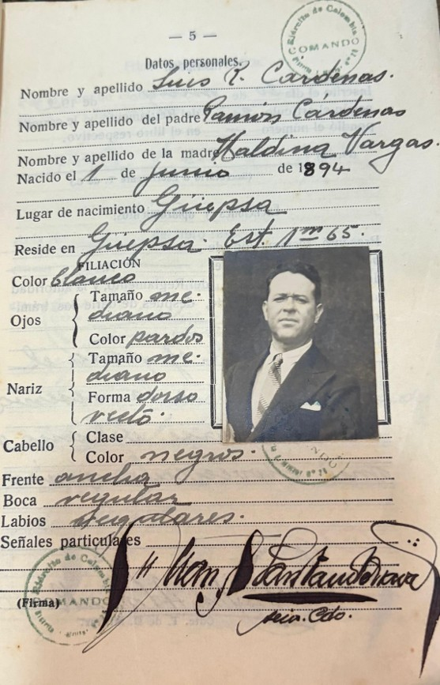
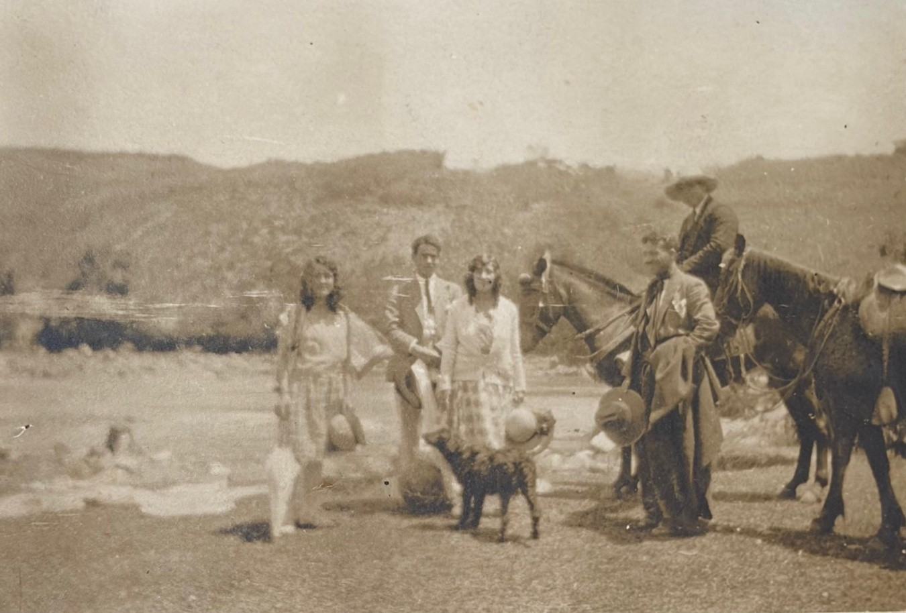
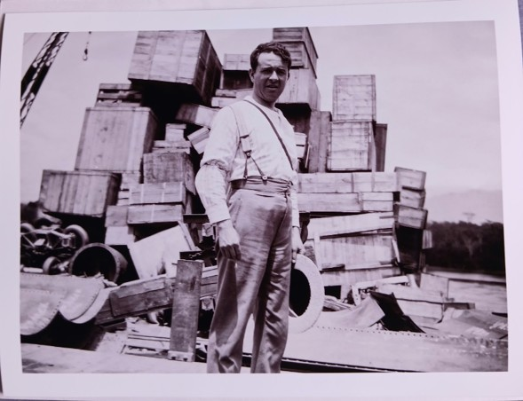
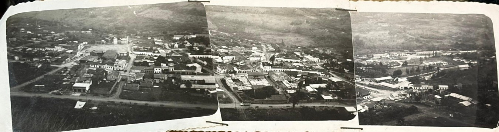
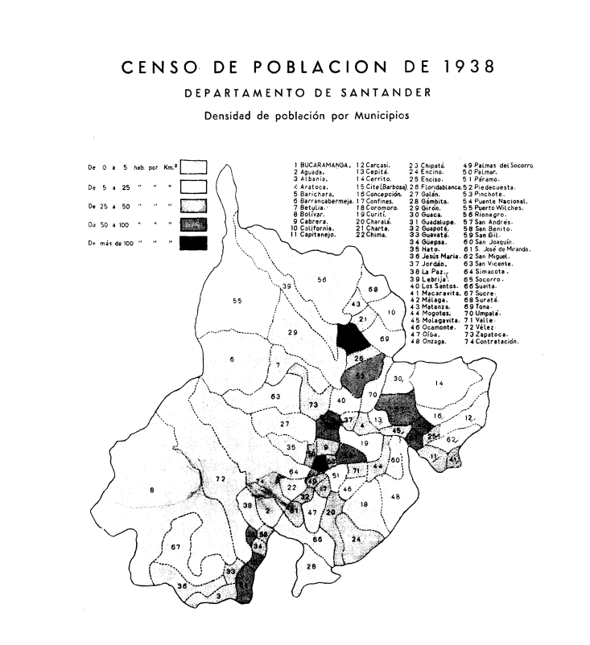
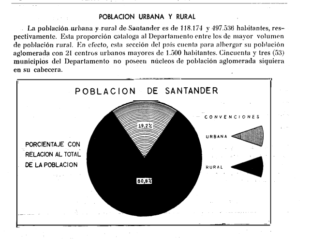
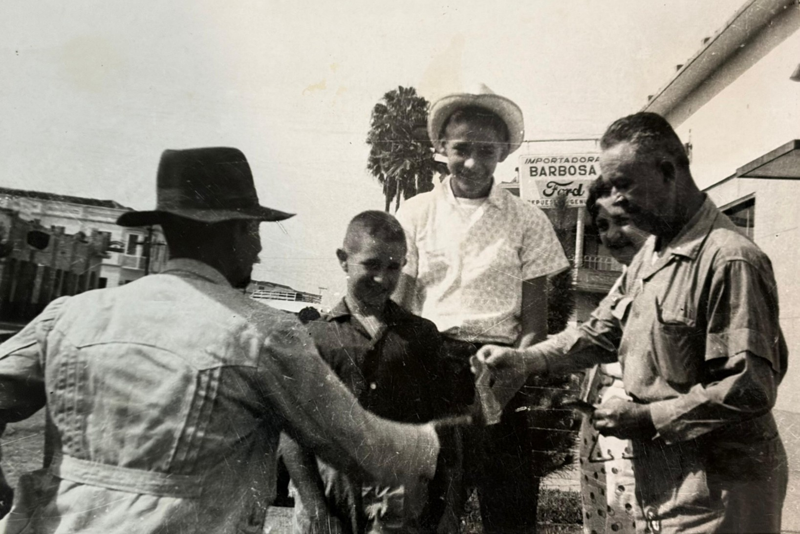

La transformación económica de Colombia durante la primera mitad del siglo XX, reconstruida desde la trayectoria empresarial de Luis Ramón Cárdenas Vargas, nacido en Güepsa, 1894 a 1965, su esposa Elvira González Bernal, 1913 a 1946, y la formación médica en Bogotá de sus hijos Luis, 1933 a 2023, e Iván, 1946.
Al cruzar las series macroeconómicas nacionales con los archivos familiares, los censos oficiales de 1938 y 1951 y la prensa provincial, este estudio explica cómo un comerciante autodidacta superó la quiebra industrial de 1929 en Bogotá y convirtió a Barbosa, Santander, estación terminal del Ferrocarril del Norte, en un enclave mercantil resiliente frente a la violencia bipartidista.

Hijo de colonos liberales de Güepsa que quedaron prematuramente huérfanos de padre, Luis Ramón apenas pudo cursar hasta segundo de bachillerato en el Colegio Nacional de Vélez. A comienzos del siglo XX comenzó a recorrer trochas santandereanas llevando máquinas de coser Singer a lomo de mula, oficio con el que reunió su primer capital.
En los años veinte, durante la bonanza financiada por la indemnización de Panamá y la expansión cafetera, se asoció con su hermano para montar una fábrica de zapatos en Bogotá, importando la maquinaria industrial a través del puerto de Buenaventura.


La trayectoria económica de Luis Ramón dependió directamente de la integración intermodal de los ferrocarriles colombianos, Junguito, 1997, Muriel, 1983, primero para traer maquinaria desde Buenaventura, luego para abastecer su almacén en Barbosa desde Bogotá por el Ferrocarril del Norte, y finalmente para mover grandes cargamentos de azúcar desde los ingenios del Valle del Cauca hasta los Santanderes. Haz clic en los nodos del mapa o navega por etapas.

Aunque originalmente se proyectó llevar el Ferrocarril del Norte hasta Bucaramanga, la línea solo alcanzó a construirse hasta Barbosa en 1935, BanRep, Junguito, 1997. Esa interrupción convirtió al municipio en un puerto seco obligado de transferencia entre el tren que subía desde Bogotá, pasando por Cajicá, Zipaquirá y Chiquinquirá, y los camiones que seguían hacia el norte de Santander.
Con visión comercial, Luis Ramón adquirió en 1944 un terreno contiguo a la plaza, la iglesia y los correos. Allí levantó una edificación con locales, bodegas, un pequeño hotel administrado por su esposa Elvira González, hasta su fallecimiento prematuro en 1946, y su almacén principal de abarrotes y ferretería, la tienda Bogotá.
Viajando personalmente a Bogotá para asegurar despachos fijos por tren, obtuvo la distribución exclusiva del diario liberal El Tiempo y, por buenas referencias comerciales, fue nombrado distribuidor único del azúcar del Valle del Cauca para Santander y Norte de Santander, llevando la contabilidad con una caja registradora de tirilla y viajando una vez al mes a consignar al Banco Comercial Antioqueño en Vélez.
En el Censo General de Población de 1938, Santander seguía siendo un departamento abrumadoramente agrario, con 80,8% rural frente a 19,2% urbano, y Barbosa aparecía aún listada bajo el nombre de Cite, Barbosa en el extremo sur. Trece años después, en el Censo de 1951, su cabecera municipal había crecido más de quince veces gracias al intercambio ferroviario.


Mientras municipios vecinos como Vélez o el corregimiento conservador de Cite vivieron intensos choques partidistas tras 1946, Barbosa mantuvo una marcada estabilidad comercial. Los registros de prensa analizados por Casallas Sierra, 2025, documentan apenas 1 hecho violento en Barbosa frente a 27 en Vélez.
Aunque Luis Ramón era de filiación liberal, evitó mezclar la política con el mostrador, mantuvo relaciones cordiales con la parroquia, las autoridades locales y sus arrendatarios, entre ellos un vecino conservador oriundo de Cite que sirvió de puente para disuadir hostigamientos contra su familia.
Viudo desde 1946, destinó el excedente de la tienda, los arriendos y la distribución del azúcar a cumplir su mayor propósito, que sus dos hijos salieran de la provincia hacia la universidad. Su hijo mayor, Luis Cárdenas González, estudió Medicina en la Pontificia Universidad Javeriana, especializándose en Pediatría, y su hijo menor, Iván, estudió Medicina en la Universidad Nacional de Colombia, especializándose en Otorrinolaringología.

Distribución territorial de los 48 registros de violencia política publicados por Vanguardia Liberal en siete municipios de la Hoya del Río Suárez. La concentración informativa en Vélez, con 27 registros y 56.3%, contrasta con la escasa mención directa a Barbosa y Cite, con 1 registro y 2.1%.
Serie anual de los 48 registros en Vanguardia Liberal. El descenso abrupto de noticias a partir de 1948 y su desaparición entre 1950 y 1955 obedecen a las restricciones del estado de sitio y a la implantación de la censura previa en noviembre de 1949.
Evolución anual de 150 expedientes criminales por violencia política conservados en el Archivo Histórico Regional de la Universidad Industrial de Santander, sigla AHR UIS, en Bucaramanga, muestra tomada sobre 245 expedientes revisados de un total de 3.498 clasificados en el fondo judicial.
El aumento de causas judiciales en los años treinta obedeció al cambio de gobierno tras el fin de la hegemonía conservadora en 1930, transición que desató disputas por el control de alcaldías, policías locales y mesas electorales en los municipios santandereanos. Tras un decenio de menor registro procesal, las denuncias volvieron a escalar entre 1946 y 1948 con el retorno conservador a la presidencia y la reactivación de los enfrentamientos partidistas en la provincia. Finalmente, los sucesos del 9 de abril de 1948 tras el asesinato de Jorge Eliécer Gaitán aceleraron las represalias armadas y multiplicaron las causas criminales en el departamento.
Esta elevada proporción de causas cerradas mediante sobreseimientos, absoluciones y prescripciones frente a apenas 19% de sentencias condenatorias demuestra una impunidad estructural en los juzgados provinciales, factor que desincentivó las denuncias formales y acentuó el subregistro judicial en las zonas rurales, Pizza Uribe, 2018.
Clasificación de los delitos instruidos en los 150 expedientes examinados y distribución porcentual de los factores inmediatos consignados en las declaraciones testimoniales. Selecciona cualquier categoría para consultar su alcance documental.
Dentro de un panorama nacional de 2.708 publicaciones periódicas catalogadas en la Biblioteca Nacional durante la primera mitad del siglo XX, Acevedo Tarazona, 2015, los diarios santandereanos operaron como órganos de adscripción partidista que orientaron la selección y el tratamiento informativo de los conflictos locales.
Documentó agresiones físicas, irregularidades electorales y sermones parroquiales dirigidos contra ciudadanos liberales en los municipios de la provincia de Vélez, Casallas Sierra, 2025.
Concentró 27 de sus 48 registros en la cabecera provincial de Vélez y consignó un único episodio directo en jurisdicción de Barbosa, el homicidio de dos liberales en el corregimiento de Cite el 29 de marzo de 1949, ocurrido en represalia por la muerte del conservador Pinzón Camacho, Casallas Sierra, 2025.
Tras la declaratoria del estado de sitio en noviembre de 1949, el diario circuló bajo revisión oficial con el aviso Esta edición ha sido visada por la censura oficial, interrumpiendo el registro informativo sobre la región entre 1950 y 1955, Casallas Sierra, 2025.
Dirigido en Bucaramanga por Manuel Serrano Blanco y Juan Cristóbal Martínez, denunció durante la República Liberal los abusos de las autoridades policiales contra poblaciones conservadoras y justificó la defensa armada en septiembre de 1931, Acevedo Tarazona, 2015.
En marzo de 1935 informó sobre hostigamiento religioso y desplazamiento de familias campesinas en Gámbita, municipio colindante con Barbosa y Moniquirá, lo que evidencia tensiones tempranas en la frontera sur del departamento, Acevedo Tarazona, 2015.
La polarización editorial derivó en asonadas que destruyeron los talleres e instalaciones de El Deber en Bucaramanga en julio de 1932 y mayo de 1946, Acevedo Tarazona, 2015.
La confrontación sistemática de los acervos hemerográficos y judiciales demuestra que la escasa presencia de Barbosa en los registros públicos obedece a tres filtros documentales, la prioridad editorial otorgada por Vanguardia Liberal y El Deber a las capitales y a sus propias agendas partidistas, Acevedo Tarazona, 2015, Casallas Sierra, 2025, el silencio informativo impuesto por la censura oficial desde noviembre de 1949, Casallas Sierra, 2025, y la fragmentación de los expedientes del Distrito Judicial de San Gil sumada a un 81% de procesos sin condena en Santander, Pizza Uribe, 2018. Ante estas limitaciones de las fuentes institucionales, la microhistoria familiar resulta indispensable para reconstruir la actividad mercantil, las redes de mediación local y la movilidad educativa vividas en la estación ferroviaria de Barbosa, tal como lo documenta el Archivo Histórico Familiar, Caso de Luis Ramón Cárdenas.
Los hitos empresariales de Luis Ramón Cárdenas en paralelo con las coyunturas económicas y políticas de Colombia entre 1894 y 1965.
Nace en Güepsa, Santander, en 1894. Tras estudiar hasta segundo de bachillerato en Vélez, recorre los caminos del departamento vendiendo máquinas de coser Singer a lomo de mula para formar su primer capital. Archivo familiar, Libreta Militar.
Importa maquinaria de calzado por el puerto de Buenaventura y abre una fábrica de zapatos en Bogotá junto a su hermano, aprovechando la expansión del crédito urbano. Junguito, 1997, Lámina 03.
El PIB real cae -3.2% entre 1929 y 1931, la iliquidez obliga a liquidar la fábrica en Bogotá. Regresa a Güepsa con Elvira González, vive en casa de su madre y ejerce como tesorero municipal. En 1933 nace su hijo Luis. GRECO, 2002, Pizza Uribe, 2018.
El Ferrocarril del Norte llega hasta Barbosa en 1935. En 1944 compra un lote estratégico junto a la plaza y construye la tienda Bogotá, bodegas, locales y un hotel administrado por Elvira González. BanRep, Contraloría, 1940.
Tras la muerte de Elvira en 1946, arrienda el hotel y consolida la distribución exclusiva de El Tiempo y del azúcar del Valle del Cauca hacia los Santanderes, manteniendo neutralidad política en medio de La Violencia. Casallas Sierra, 2025, DANE, 1954.
Con los ahorros acumulados en Barbosa financia los estudios universitarios de sus dos hijos en Bogotá, Luis en Pediatría en la U. Javeriana e Iván en Otorrinolaringología en la U. Nacional, culminando su proyecto de movilidad social. Relatos orales familia Cárdenas González.
Filtra por año, variable o fuente primaria.
| Periodo | Variable o Indicador | Escala | Dato Histórico | Fuente | Articulación Caso Cárdenas |
|---|---|---|---|---|---|
| 1929 a 1931 | Contracción del PIB Real | Nacional | -3.2% | GRECO, 2002 | Cierre y liquidación de la fábrica de calzado en Bogotá |
| 1922 a 1934 | Extensión red férrea Santander | Departamental | +108.7%, de 92 a 192 km | Muriel, 1983, Junguito, 1997 | Llegada del tren a Barbosa en 1935 y creación de puerto seco |
| 1930 a 1948 | Expedientes judiciales e impunidad en Santander | Departamental | Pico en 1932 con 35 casos, 81% sin condena | Pizza Uribe, 2018 | Subregistro de Vélez con 1% por pertenecer al Distrito Judicial de San Gil |
| 1930 a 1946 | Cobertura prensa conservadora en frontera sur | Regional | Reportes de éxodo en Gámbita en marzo de 1935 | Acevedo Tarazona, 2015 | Evidencia del sesgo editorial partidista en Bucaramanga |
| 1938 a 1951 | Población cabecera de Barbosa | Municipal | +1,483%, de 153 a 2,422 hab. | Contraloría, 1940, DANE, 1954 | Compra de lote central en 1944 y apertura de tienda Bogotá |
| 1946 a 1958 | Registros de violencia en prensa liberal y censura | Provincial | Barbosa 1 frente a Vélez 27, censura nov. 1949 | Casallas Sierra, 2025 | Refugio comercial neutral y necesidad del archivo familiar ante silencio de prensa |
| 1953 a 1957 | Control cambiario y divisas | Nacional | Dólar preferencial industrial | Jaramillo Echeverri et al., 2019 | Restricciones de importación directa, consolidación del comercio interno |